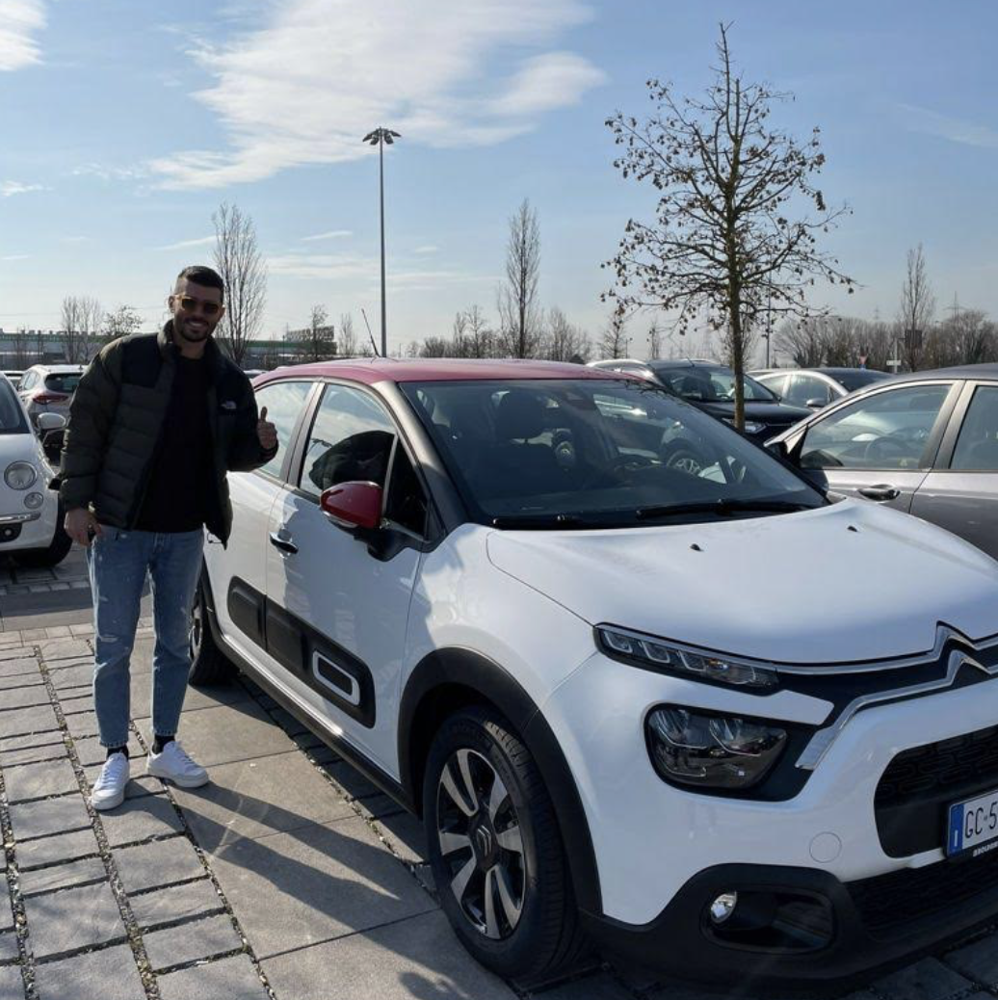
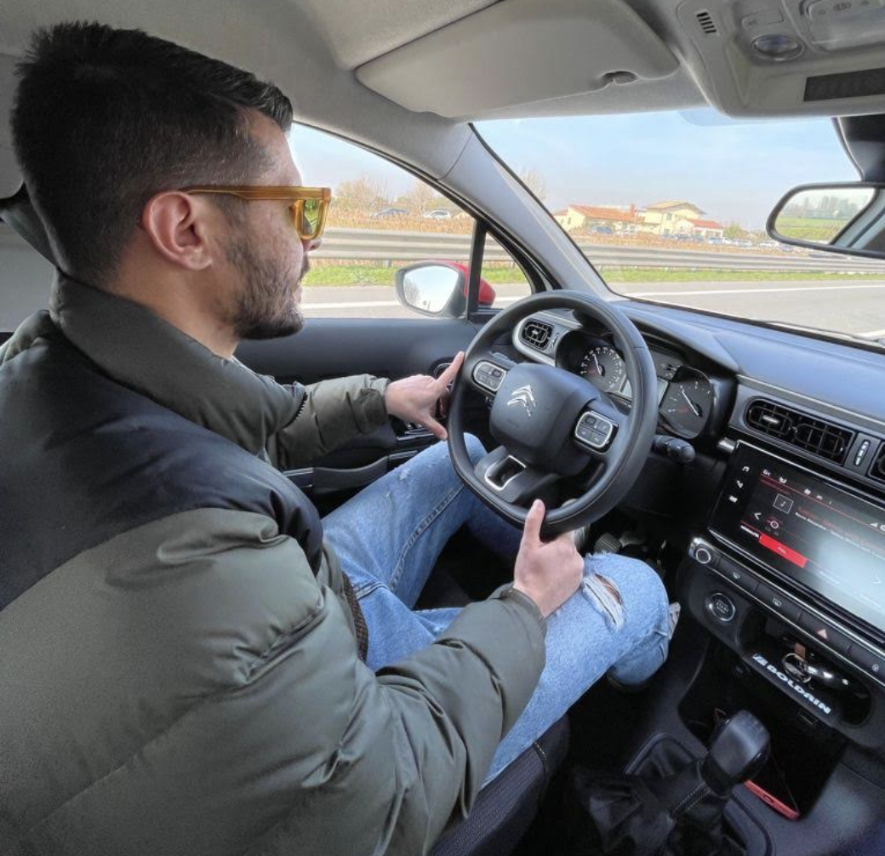
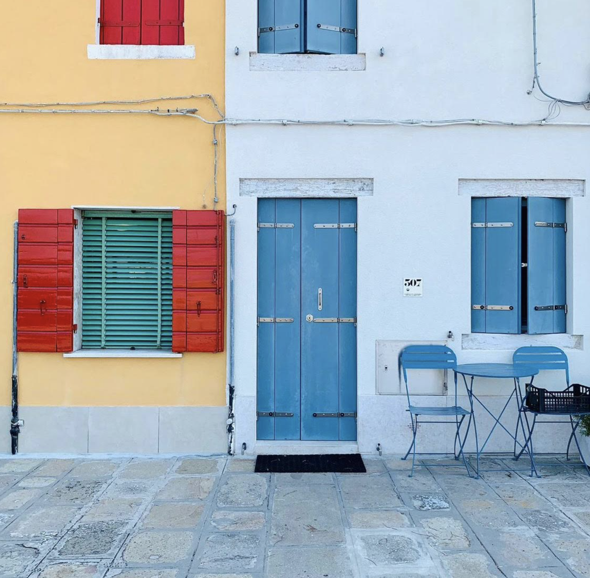
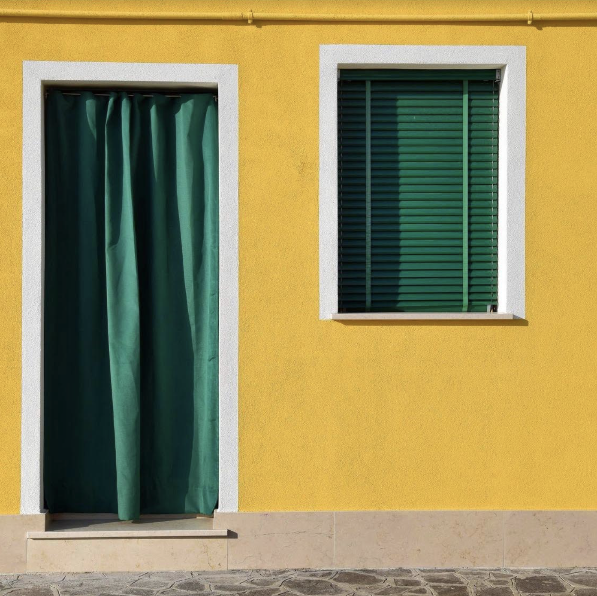

Here's Gionny, he just bought his new carmacchina so for the moment he doesn't seem too upset when you call him to come and pick you up wherever you are in the islandisola .

You don't drive so you don't have a car, and you need him sometimes. You love being carried around by your brotherfratello while listening to music or discussin about what's around.
Pellestrina is very interesting to see from a certain speedvelocitá , because you see all the colorscolori of the little houses mixing together, and the view is never boring.

You like color contrasts so it happens that a trip every once in a while is a form of inspirationispirazione or a color palette being created.

While in the car your brother asks you if you want to go home or go to your father's restaurant. What do you say?